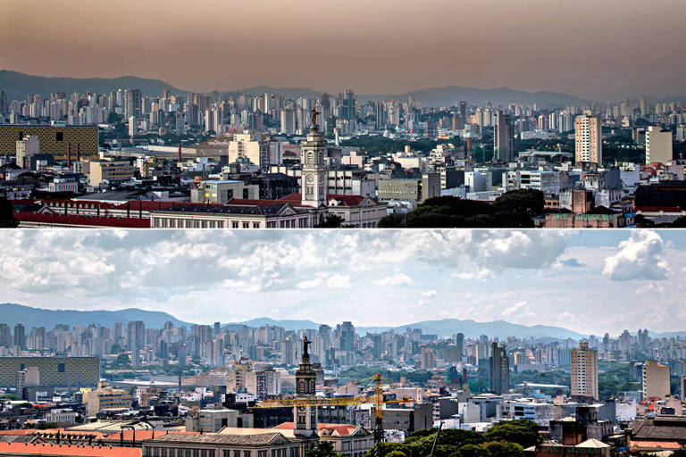
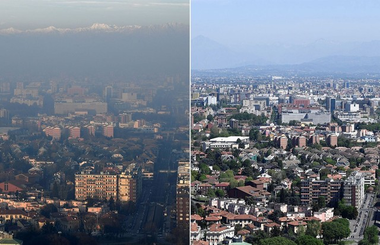
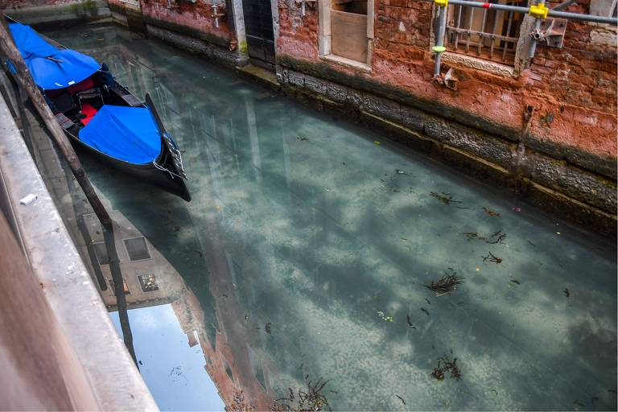
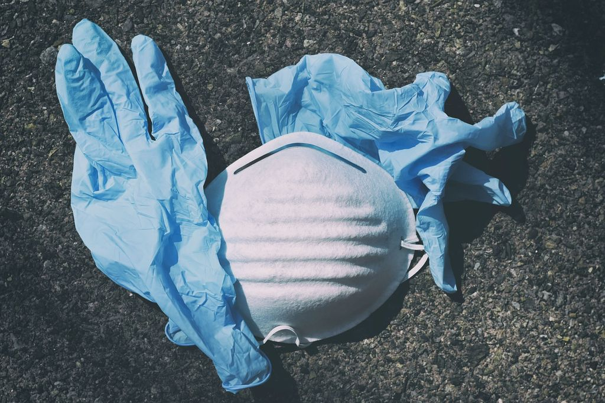

Desde que foi declarada a pandemia, foi observado impactos positivos e negativos do COVID-19 no meio ambiente em razão de algumas medidas tomadas para conter a disseminação do vírus. Os positivos têm à redução dos danos ambientais provocados pelas indústrias e comércio, redução nas emissões de CO2, no uso de combustíveis fósseis e na degradação ambiental para extração de matéria prima. Contudo, há os impactos negativos, afinal, pode haver uma maior geração de resíduos domiciliares e de saúde, que, inclusive, podem não receber uma destinação adequada e legalmente correta.
Um dos impactos positivos do COVID-19 no meio ambiente é o ar mais limpo e a redução das emissões de gases que contribuem para as mudanças climáticas. O que ocasionou essa melhora foi o fechamento temporário de várias empresas, além da restrição no comércio e de viagens. Menos indústrias funcionando e menos circulação de veículos que utilizam combustível fóssil resultam em menos emissão dióxido de carbono (CO₂) e dióxido de nitrogênio (NO2) na atmosfera. Em uma reportagem da revista EXAME é citado à redução na concentração de dióxido de nitrogênio (NO2) em fevereiro na cidade chinesa de Wuhan, epicentro da pandemia de COVID-19. Em março o mesmo fenômeno foi confirmado no norte da Itália. Também, houve menor consumo de energia elétrica ocasionada principalmente pela queda na atividade industrial. A menor demanda por geração de energia hidrelétrica permitiu que os reservatórios recuperassem parte do nível de armazenamento.
Cidade de São Paulo, antes e depois da Pandemia.
Cidade Europeia, antes e durante a Pandemia.
"Ruas" de Veneza durante a Pandemia, podendo observar peixes o fauna aquática.
Um dos impactos negativos do COVID-19 no meio ambiente é o aumento na geração de resíduos de saúde e domiciliares. A população por estar em isolamento social consome mais, consequentemente, gera mais resíduo.
Boa parte dos municípios não possui coleta seletiva de resíduos recicláveis e nem aterros sanitários para receber os resíduos. A coleta, principalmente em cidades menores, é precária. Muitas vezes o resíduo acaba sendo descartado em lixões a céu aberto ou em outros locais ilegais. Além disso, como muitos infectados estão realizando o tratamento em casa, os resíduos gerados por eles podem esta infectado pelo coronavírus e devem receber tratamento adequado antes do descarte. Os resíduos gerados em áreas hospitalares que realizam o tratamento contra a COVID-19 também devem receber a destinação final correta.
É importante que os resíduos sejam acondicionados e destinados de maneira segura e ambientalmente correta para evitar os impactos ambientais, conforme especificado na RDC ANVISA nº 222/2018. Antes do descarte, esses resíduos deverão receber tratamento prévio que assegure a eliminação das características de periculosidade do resíduo, a preservação dos recursos naturais e, o atendimento aos padrões de qualidade ambiental e de saúde pública. Outro problema é com as máscaras utilizadas pela população. O uso de EPIs, principalmente máscaras respiratórias e luvas (produzidas em TNT, algodão, látex, vinil e outros materiais), tem causando vários impactos negativos no meio ambiente, já que muitos não realizam o correto descarte desses produtos depois de utilizados.